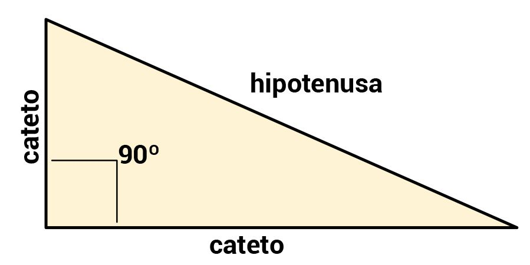
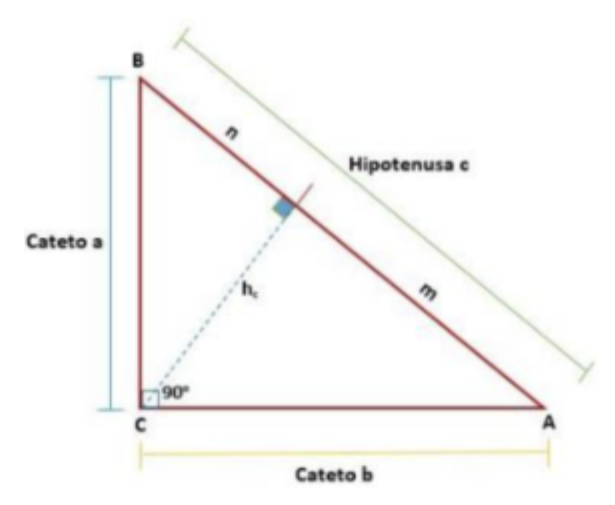
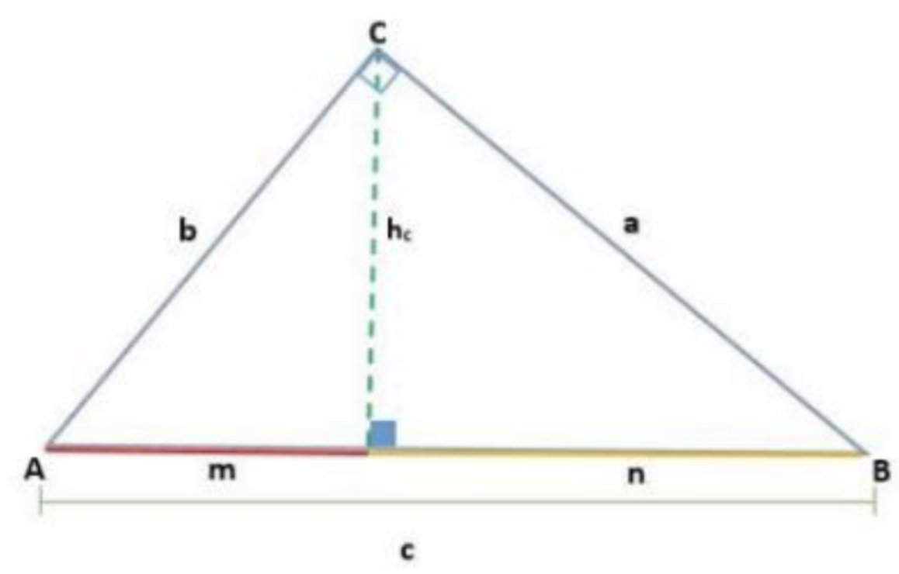
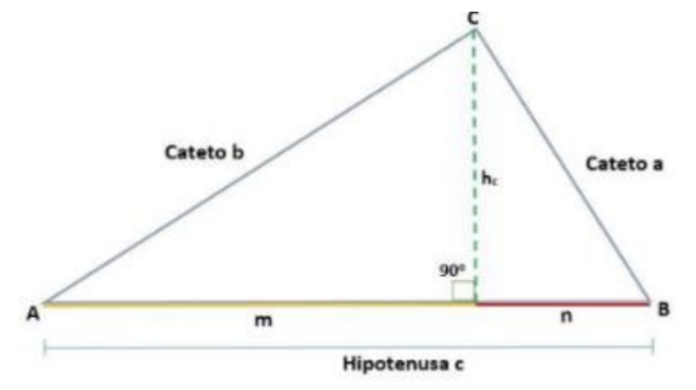
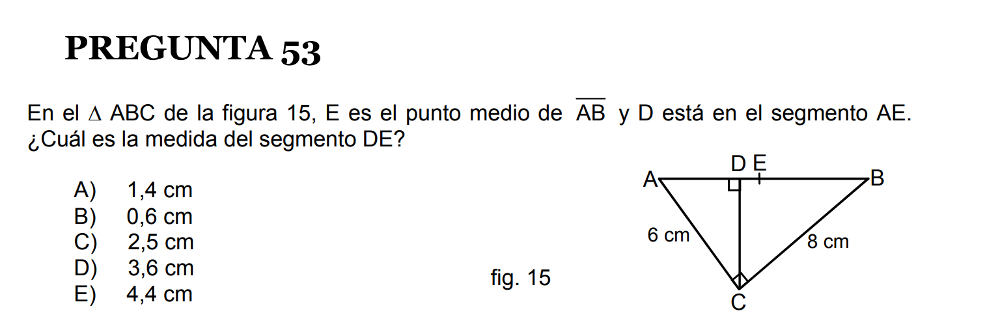
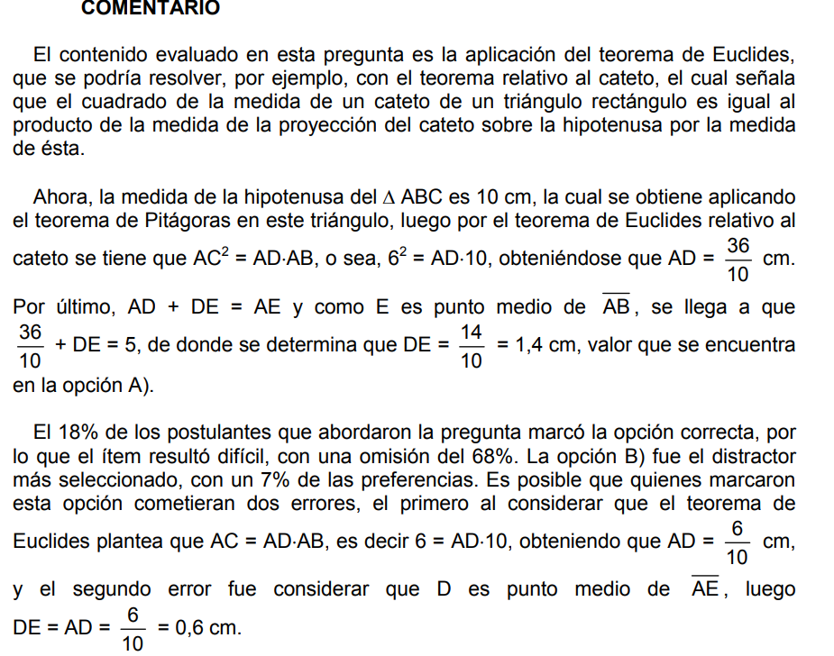
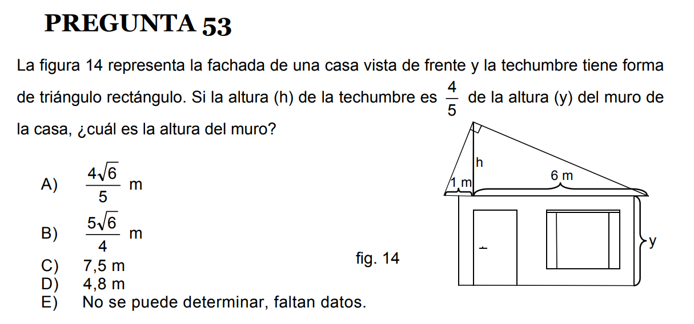
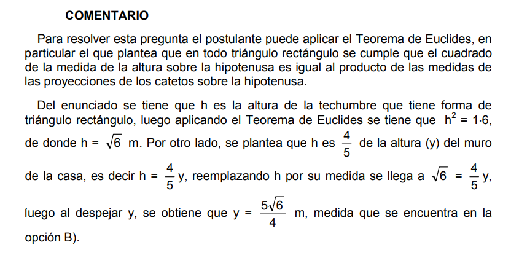

"You can think big"
¡Bienvenidos a nuestro sitio web! Aquí exploraremos el fascinante Teorema de Euclides, uno de los fundamentos de la geometría.
M. Ibaceta, A. Ortiz, J. Retamal, F. Retamales y A. Rico


El Teorema de Euclides
Electivo Pensamiento Computacional y Programación
"Al cubo"
¡Bienvenidos a nuestro sitio web! Aquí exploraremos el fascinante Teorema de Euclides, uno de los fundamentos de la geometría.
M. Ibaceta, A. Ortiz, J. Retamal, F. Retamales y A. Rico
El Teorema de Euclides se basa en los triángulos rectángulos, que tienen un ángulo recto de 90 grados. Un triángulo es rectángulo si uno de sus ángulos mide 90 grados. La hipotenusa es el lado opuesto al ángulo recto, y los otros dos lados son los catetos.
Para representar los triángulos, llamaremos a la hipotenusa c, y a los catetos a y b.
Euclides (330 a.C. - 275 a.C) fue un gran matemático griego conocido principalmente por su obra "Elementos". Este tratado es una compilación de conocimientos matemáticos que rivaliza en importancia con las obras más famosas de la literatura universal.
Expresión matemática: El Teorema de Euclides se expresa como c² = a² + b², donde c es la hipotenusa y a y b son los catetos.
Donde 'C' es la longitud de la hipotenusa, y las variables 'A' y 'B' son las longitudes de los otros lados (llamados catetos)
¿Qué postula el Teorema de Euclides? Este teorema plantea que: «Al trazar la altura desde el ángulo recto de un triángulo rectángulo, los dos nuevos triángulos son semejantes entre sí, y a la vez son semejantes al triángulo rectángulo original». Del teorema de Euclides podemos destacar dos elementos centrales: El Teorema de la altura y el Teorema del cateto.
1. Teorema de la altura: En un triángulo rectángulo obtenemos dos relaciones alternativas en los que intervienen los siguientes elementos: los catetos b y c, la hipotenusa a, la altura h y las proyecciones m y n de los catetos sobre la hipotenusa. En un triángulo rectángulo el cuadrado de la altura sobre la hipotenusa es igual al producto de las proyecciones de los catetos sobre la hipotenusa, así el teorema de la altura viene dado por: hc² = m x n
2. Teorema del cateto: Ahora vamos a obtener la relación entre los catetos y sus proyecciones sobre la hipotenusa. En un triángulo rectángulo, el cuadrado de la longitud de un cateto es igual al producto de la longitud de la hipotenusa por la longitud de la proyección del cateto sobre la hipotenusa.
Teorema del Cateto 2014
 Teorema de la Altura 2013
 